How to install Mercurial¶
はじめに¶
- mercurialのインストールドキュメントは bitbucketに移動しました
- GUIクライアント、CUIクライアントの両方をインストールしてください。
Mercurialの入手方法¶
次のURLから取得できます。2012/06/23時点の最新はMercurial-2.2.2です。
Windowsの場合¶
Windowsの場合、次の選択肢からMercurialをインストールする方法を選ぶことが出来ます。TortoiseHgの利用がおすすめです。
| クライアント | GUI | CUI | 備考 |
|---|---|---|---|
| TortoiseHg | ○ | ○ | 万人におすすめ |
| Inno Setup installer | × | ○ | 管理者権限が不要 |
| Cygwin mercurial | × | ○ | Cygwin |
TortoiseHg¶
TortoiseHg はMercuialのGUIクライアント(TortoiseHg Workbench)とWindowsエクスプローラに統合するためのシェル拡張を含んだパッケージです。 WindowsでMercurialを利用したい場合はTortoiseHgをインストールすることをおすすめします。
TortoiseHgにはCUI Windows版バイナリ相当のファイルも同梱されていますので、CUIで利用するためにCUI Windows版バイナリをインストールする必要はありません。
TortoiseHgインストール後、OSの再起動は必要ありません。
インストール¶
- まず http://mercurial.selenic.com/downloads/ からTortoiseHgのインストーラをダウンロードします。
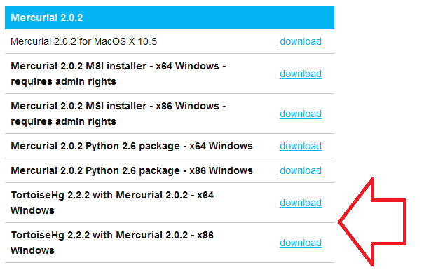
- ダウンロードしたTortoiseHgインストーラを実行します。

- ライセンスに同意します。問題無ければ「Next」をクリックします。
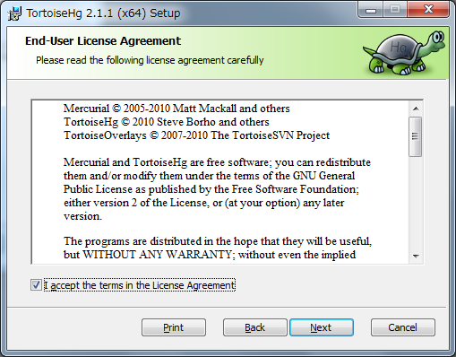
- インストール内容の確認を行います。インストール先を変更する場合は「Browse」を。問題無ければ「Next」をクリックします。
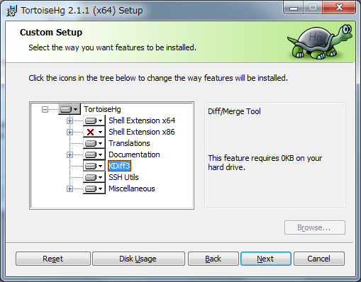
- インストール前の確認です。問題無ければ「Install」をクリックします。

- インストールが開始されます。
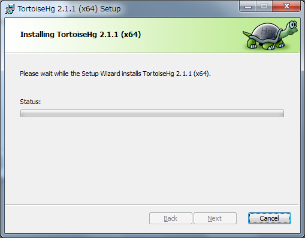
- インストール時にエクスプローラの再起動を要求されます。問題無ければ「OK」をクリックします。

- 問題が無ければインストール完了です。


Inno Setup installer¶
GUIシェル拡張は不要でhgコマンドのみインストールしたい場合は Inno Setup installer を利用してインストールします。
インストール¶
- まず http://mercurial.selenic.com/downloads/ からInno Setup installerダウンロードします。
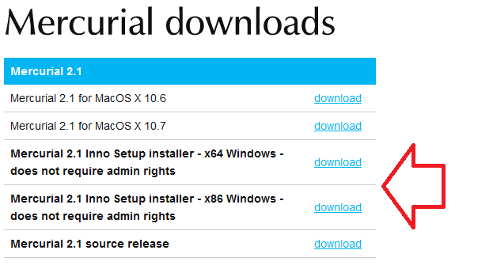
- ダウンロードしたInno Setup installerを実行します。
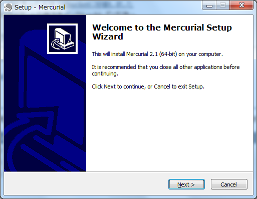
- ライセンスに同意します。問題無ければ「Next」をクリックします。
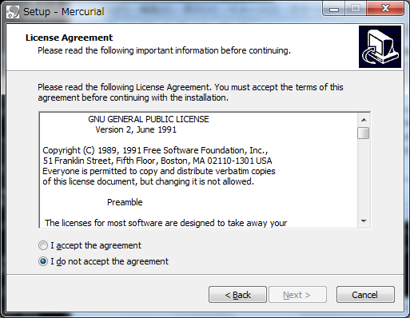
- インストール内容の確認を行います。インストール先を変更する場合は「Browse」を。問題無ければ「Next」をクリックします。
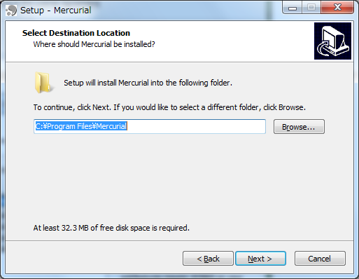
- インストール前の確認です。問題無ければ「Install」をクリックします。
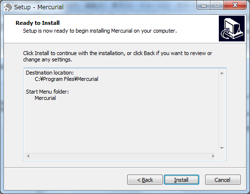
- インストールが開始されます。
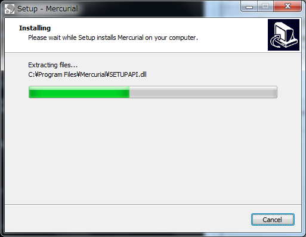
- 問題が無ければメッセージがでます。
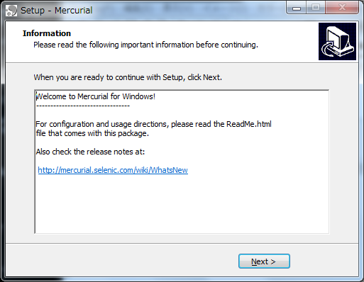
- 問題が無ければインストール完了です。
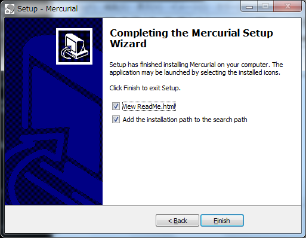
MacOSXの場合¶
MacOSXの場合、次の選択肢からMercurialをインストールする方法を選ぶことが出来ます。
| クライアント | GUI | CUI | 備考 |
|---|---|---|---|
| MacHg | ○ | × | 10.6+ |
| SourceTree | ○ | × | 10.6+ |
| 公式バイナリ | × | ○ | 10.6+ |
| MacPorts | × | ○ | |
| Homebrew | × | ○ |
MacHg(OSX 10.6+)¶
MacHg はTortoiseHg Workbenchに似たGUIクライアントです。無償で利用できますのでまずはじめに試すことをおすすめします。
インストール¶
- まず http://jasonfharris.com/machg/downloads/downloads.html からMacHgのアーカイブをダウンロードします。
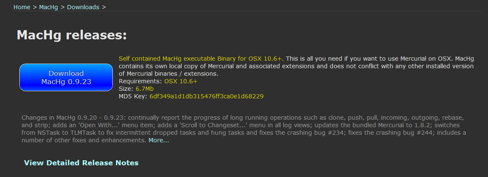
- ダウンロードしたMacHgのアーカイブを展開します。
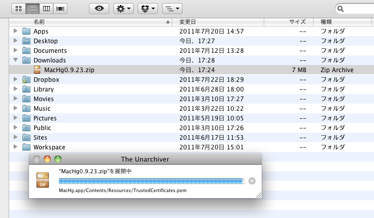
- 展開したするとMacHgというファイルが作成されます。
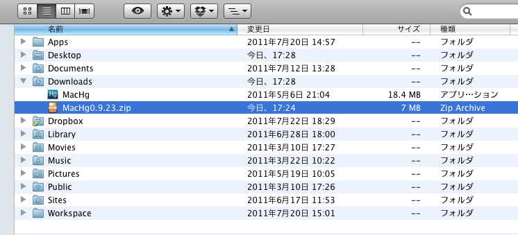
- 展開したMacHgをアプリケーションディレクトリに移動させればインストール完了です。
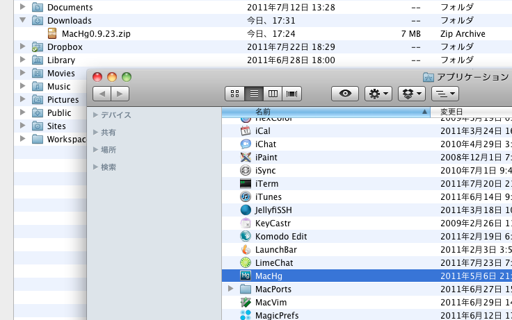
SourceTree(OSX 10.6+)¶
SourceTree はMercurial,GitのGUIクライアントです。以前は有償のソフトウェアでしたが、Atlassianに買収後は無償提供されるようになりました。
MacAppStoreからインストールする事ができます。
公式バイナリ¶
TODO
Linux/Cygwinの場合¶
各ディストリビューションのパッケージから¶
各ディストリビューションのパッケージからmercurialをインストールする事ができます。
2012/02/12時点でインストールされるバージョンは次の通りです。最新バージョンを利用したい場合はeasy_installもしくはソースコードからインストールする必要があります。
| ディストリビューション | mercurialのバージョン |
|---|---|
| Debian squeeze | 1.6.4 |
| Debian wheezy | 2.0.2 |
| Ubuntu 11.04 (natty) | 1.7.5 |
| Ubuntu 11.10 (oneiric) | 1.9.1 |
| Ubuntu 12.04 (precise) | 2.0.2 |
| Centos 5 (Repoforge) | 2.2.2 |
| Centos 6 (Repoforge) | 2.2.2 |
| Cygwin | 1.9.2 |
| Cygwin | 1.9.3 |
CentOS¶
CentOSの公式リポジトリにmercurialのパッケージは存在しませんが、 Repoforge(旧名RPMforge) を利用する事によってパッケージからインストールする事ができます。
CentOS 5、アーキテクチャがx86_64の場合は次のコマンドでrepoforgeをインストールします。詳しくは http://repoforge.org/use/ を参照してください。
% wget http://pkgs.repoforge.org/rpmforge-release/rpmforge-release-0.5.2-2.el5.rf.x86_64.rpm % rpm -Uhv rpmforge-release-0.5.2-2.el5.rf.x86_64.rpm
yumでインストールする事が出来ます。
% yum install mercurial
Cygwin¶
setup.exeを使用したパッケージインストール時にmercurialを指定します。
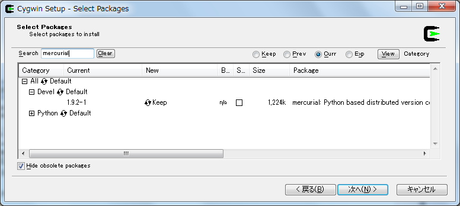easy_install¶
easy_install は PyPI の簡易インストーラです。システムのpythonを利用した場合、/usr/binにインストールするので気をつけてください。
easy_installのインストール¶
まずeasy_installをインストールしましょう。easy_installはez_setup.pyというブートストラップモジュールを使ってインストールすると簡単です。
% curl -O http://peak.telecommunity.com/dist/ez_setup.py % python ez_setup.py
ez_setup.pyを利用しない場合は easy_install のページから適切なeggをダウンロードし、シェルスクリプトとして実行します。
% curl -O http://pypi.python.org/packages/2.6/s/setuptools/setuptools-0.6c11-py2.6.egg % sh setuptools-0.6c11-py2.6.egg
pip¶
pip はeasy_installを置き換えるパッケージインストーラです。パッケージの検索、パッケージのアンインストールなど豊富な機能を備えています。
pipのインストール¶
easy_installを使ってインストールする事が出来ます。
% easy_install -U pip
easy_installを利用しない場合は専用のget-pip.pyというインストーラを利用してインストールします。
% curl -O https://raw.github.com/pypa/pip/master/contrib/get-pip.py % python get-pip.py
ソースコード¶
mercurial 1.4以降は docutils というパッケージに依存しています。easy_installやpipを利用する場合は依存関係解決の中で自動的にインストールされますが、ソースからインストールする場合は自前でインストールする必要があります。
docutilsのインストール¶
easy_installを利用する事も出来ます。
% easy_install -U docutils
ソースコードからインストールする場合は、 docutils のサイトからアーカイブを取得します。
% tar zxvf docutils-0.8.1.tar.gz % cd docutils-0.8.1 % ./setup.py install
mercurialのソースコードアーカイブの取得¶
ソースコードアーカイブを取得、展開します。
% curl -O http://mercurial.selenic.com/release/mercurial-2.2.2.tar.gz % tar zxvf mercurial-2.2.2.tar.gz % cd mercurial-2.2.2
mercurialにはconfigureスクリプトは同梱されていないので、適切にmakeコマンドに引数を与えてインストールします
システムワイドにインストール¶
/usr/local以下にインストールする場合です。
% make install
プレフィックスを変更する場合はPREFIXを指定します。
% make install PREFIX=/path/to/mercurial